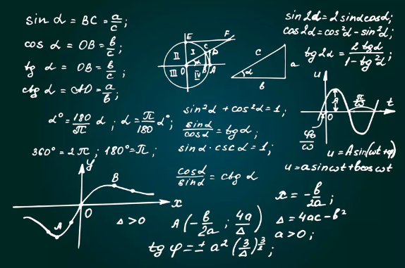

In geometry, an equilateral triangle is a triangle in which all three sides are equal. In the familiar Euclidean geometry, equilateral triangles are also equiangular; that is, all three internal angles are also congruent to each other and are each 60°.
An isosceles triangle is a triangle with (at least) two equal sides. In the figure above, the two equal sides have length and the remaining side has length . This property is equivalent to two angles of the triangle being equal. An isosceles triangle therefore has both two equal sides and two equal angles.
A scalene triangle is a triangle that has three unequal sides.Like other triangles, all the angles inside a scalene triangle add up to 180 degrees. And just like all the sides of a scalene triangle have different lengths, all the angles of a scalene triangle have different measures.